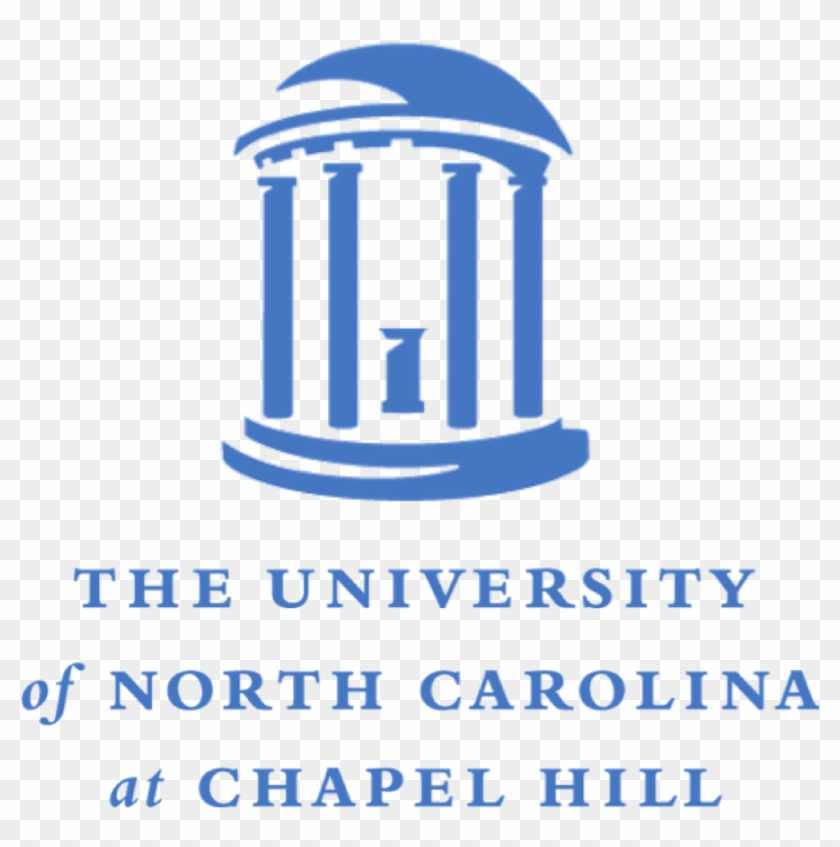

|
Hi! I’m Jingxuan Wu (吴竟瑄). I am a master’s student in Statistics & Operations Research at the University of North Carolina at Chapel Hill, and I received my B.S. from The Chinese University of Hong Kong, Shenzhen. Since my undergraduate years at CUHK-Shenzhen, I have been fortunate to be advised by Prof. Guanting Chen at UNC–Chapel Hill and Prof. Xiaocheng Li at Imperial College London, and I continue to collaborate with them during my master's. In 2025, I began working with Prof. Xingrui Yu and Prof. Ivor Tsang at A*STAR. Previously, I also worked with Prof. Jianfeng Mao. I am currently seeking 2026 summer research opportunities and Ph.D. positions for Fall 2027. I’m also open to research collaborations. If you’re interested in my work, please contact me directly via the email listed below. Email: |
Learning to Learn
|
|
My research focuses on building data-efficient, adaptive learning systems across three fronts: (1) online learning with LLMs—leveraging LLMs’ reasoning and learning abilities, combined with online algorithms, to solve scenario-driven problems from streaming data and human/implicit feedback; (2) reinforcement learning—developing methods and applications to tackle agentic RL problems, turning feedback into reliable decision-making and controllable behaviors; and (3) diversity in graph generative models, where I study both RL-trained and training-free approaches to broaden coverage, mitigate mode collapse, and enable fine-grained control. |
|

University of North Carolina at Chapel Hill
2024.1 – Present
Research Assistant & M.S. Student (Statistics & Operations Research) Advised by Prof. Guanting Chen and Prof. Xiaocheng Li.
Agency for Science, Technology and Research (A*STAR)
2025.6 – Present
Research Assistant Advised by Prof. Xingrui Yu and Prof. Ivor Tsang.
School of Data Science, CUHK–Shenzhen
2023.11 – 2025.5
Undergraduate Research Assistant Advised by Prof. Jianfeng Mao. |